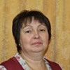

Дошкольное отделение школы № 1155
В 2015 году 41% первоклассников Школы № 1155 пришли из дошкольного отделения.
- 2-я Лыковская улица, 23к2
- улица Твардовского, 13к1
- улица Твардовского, 17к2
Воспитатели
Воспитатели, которых чаще всего благодарят родители (отзывы и профили сотрудников взяты с официального сайта школы):|
Воспитатель
Молодцова Марина Анатольевна
3 благодарности |
Воспитатель
Козлова Светлана Валерьевна
3 благодарности |

Воспитатель
Карташова Лидия Ивановна
1 благодарность |
Воспитатель
Ронжина Ольга Николаевна
1 благодарность |
|
Воспитатель
Баденская Светлана Викторовна
1 благодарность |
Воспитатель
Горбунова Валентина Михайловна
1 благодарность |
Воспитатель
Коновалова Елена Ивановна
1 благодарность |
Воспитатель
Буланова Елена Сергеевна
1 благодарность |
|
Муз. рук.
Ковтун Маргарита Евгеньевна
1 благодарность |
Отзывы
Данные собраны c официального сайта школы и через форму для отзывов.
1 группа Д\О № 2.
Елена Сергеевна - заботливый воспитатель, прекрасный педагог, и просто добрый человек! Всегда подбирает интересные материалы для обучения, дети осведомлены о праздниках, о писателях. Сын всегда удивляет своим новыми знаниями! Она очень внимательная ко всем особенностям детей и их родителей. Спасибо ей, за всех наших детей.
Елена Сергеевна - заботливый воспитатель, прекрасный педагог, и просто добрый человек! Всегда подбирает интересные материалы для обучения, дети осведомлены о праздниках, о писателях. Сын всегда удивляет своим новыми знаниями! Она очень внимательная ко всем особенностям детей и их родителей. Спасибо ей, за всех наших детей.
Добрый день,
От лица всех Родителей и воспитанников гр №6
Выражаем огромную благодарность: нашим горячо любимым наставникам: Светлане Валерьевне, Юлии Викторовне ,Марине Анатольевне, за подготовленные и проведенные праздники посвященные таким праздникам, как 23 февраля и День 8 Марта! Папы получили массу удовольствия ,принимая участие в интерактивном спортивном празднике !
Мамы остались в восторге от просмотра мини фильма с различными программами , где главные роли исполняли наши детишки! Дети остались под большим впечатлением от участия в подготовке к праздникам и показе!
Спасибо вам большое! Вы всегда знаете , как нас можно порадовать и удивить!
С Уважением к Вам , все родители и ваши подопечные ;)
От лица всех Родителей и воспитанников гр №6
Выражаем огромную благодарность: нашим горячо любимым наставникам: Светлане Валерьевне, Юлии Викторовне ,Марине Анатольевне, за подготовленные и проведенные праздники посвященные таким праздникам, как 23 февраля и День 8 Марта! Папы получили массу удовольствия ,принимая участие в интерактивном спортивном празднике !
Мамы остались в восторге от просмотра мини фильма с различными программами , где главные роли исполняли наши детишки! Дети остались под большим впечатлением от участия в подготовке к праздникам и показе!
Спасибо вам большое! Вы всегда знаете , как нас можно порадовать и удивить!
С Уважением к Вам , все родители и ваши подопечные ;)
Здраствуйте Уважаемый Константин Владимирович!
Мои дети посещают садик (1отд). Дочка в 6-ой группе, сын в 5-ой.
Я бы хотела обратить ваше внимание на педагогов этих групп!
6-ая Группа. Дочка у этих воспитателей первый год, и каково мое удивление что она каждый вечер засыпает и ждет когда снова пойдет к любимым воспитателям! Это потрясающие воспитатели, которые заинтересованы в успехах детей,которые всей душой отдаются работе. Результат мы,как родители, видим дома счастливых детей, а так же воспитатели постоянно делают видео,фото и выкладывают все в Эл. Почту группы, тем самым "открыв нам двери" в период нахождения деток в саду.
Воспитатели ежедневно занимаются,заинтересовывают,играют с детьми.
Молодцова Марина Анатольевна, Козлова Светлана Валерьевна и Юлия Викторовна (помощн.воспит)- это те люди которые достойно и с совестью работают в своей профессии!!
Светлана Валерьевна- это их "вечный двигатель" она всегда что-то придумывает; снимает,монтирует видео; играет с детьми!
Марина Анатольевна- это воспитатель,который учит наших деток доброте, хорошим поступкам; читает книги, рассказывает разные интересные рассказы (даже на прогулках она заинтересовывают деток:)
Юлия Викторовна - добрая, отзывчивая воспитатель! Имея опыт общения с детьми девочкам с ней особо интересно наряжаться, играть в девчачьи игры, ну и конечно дети любят помогать ей дежурить.
Восхищаюсь тем,сколько они все вместе занимаются рисованием,лепкой, аппликациями с детьми. Это каждый вечер я слышу "мам пойдем покажу что мы делали сегодня" и я Вам не могу передать то чувство счастья и спокойствия за своего ребенка, отдавая его в сад.
5-ая Группа. Малыши. Да,там маленькие детки 3-4года. Но и у них воспитатели самой высшей категории!! Это идеальное подходящие два воспитателя. Ронжина Ольга Николаевна - это воспитатель- учитель,она вторая "мама" нашим детям. Занимается развитием речи,математикой,лепкой и многим другим, и конечно же ставит сценки с нашими малышами, помогает детям "адаптироваться" к сцене. Имеет к каждому ребенку особый подход!
Коновалов Елена Ивановна (Еленовна Ивановна,как говорит сын:)- это творческий воспитатель, с ней детки с удовольствием занимаются рисованием,лепкой, играют в подвижные игры и считают её своим другом!
Светлана Викторовна(помощн.воспит.)- "палочка выручалочка" в нашей группе. Всегда следит чтобы все были сыты, чистые, и смотрит за всеми детками, помогает и так же участвует в играх,выступлениях,зарядке- в общем незаменимый человек.
В группе всегда веселая,добрая атмосфера. Ежедневно они что то творят с воспитателями, рисуют,раскрашивать,лепят,танцуют...
Подводя итог,хочу сказать что КАЖДЫЙ из воспитателей 5 и 6 группы с уважением,вниманием относятся к родителям своих воспитанников. Всегда ответят на все вопросы,касающиеся своего ребенка,отвечают искренне и подробно! Я безумно рада,что мои дети в надежных руках. Я доверяю своих детей этим людям и знаю, что все они сделают максимум,чтобы не толькр обеспечить безопасный присмотр,они ещё и разнообразят веселый досуг малышам.
Прошу Вас отметить каждого педагога благодарностью от лица родителей.
Спасибо им за то,что родители,находясь на работе спокойны за своих чад.
Желаю вашей (нашей будущей) школе процветания и хороших результатов. И всем знакомым однозначно скажу,что наш сад и будущая школа лучшие в нашем районе!!
С уважением, Анна
Мои дети посещают садик (1отд). Дочка в 6-ой группе, сын в 5-ой.
Я бы хотела обратить ваше внимание на педагогов этих групп!
6-ая Группа. Дочка у этих воспитателей первый год, и каково мое удивление что она каждый вечер засыпает и ждет когда снова пойдет к любимым воспитателям! Это потрясающие воспитатели, которые заинтересованы в успехах детей,которые всей душой отдаются работе. Результат мы,как родители, видим дома счастливых детей, а так же воспитатели постоянно делают видео,фото и выкладывают все в Эл. Почту группы, тем самым "открыв нам двери" в период нахождения деток в саду.
Воспитатели ежедневно занимаются,заинтересовывают,играют с детьми.
Молодцова Марина Анатольевна, Козлова Светлана Валерьевна и Юлия Викторовна (помощн.воспит)- это те люди которые достойно и с совестью работают в своей профессии!!
Светлана Валерьевна- это их "вечный двигатель" она всегда что-то придумывает; снимает,монтирует видео; играет с детьми!
Марина Анатольевна- это воспитатель,который учит наших деток доброте, хорошим поступкам; читает книги, рассказывает разные интересные рассказы (даже на прогулках она заинтересовывают деток:)
Юлия Викторовна - добрая, отзывчивая воспитатель! Имея опыт общения с детьми девочкам с ней особо интересно наряжаться, играть в девчачьи игры, ну и конечно дети любят помогать ей дежурить.
Восхищаюсь тем,сколько они все вместе занимаются рисованием,лепкой, аппликациями с детьми. Это каждый вечер я слышу "мам пойдем покажу что мы делали сегодня" и я Вам не могу передать то чувство счастья и спокойствия за своего ребенка, отдавая его в сад.
5-ая Группа. Малыши. Да,там маленькие детки 3-4года. Но и у них воспитатели самой высшей категории!! Это идеальное подходящие два воспитателя. Ронжина Ольга Николаевна - это воспитатель- учитель,она вторая "мама" нашим детям. Занимается развитием речи,математикой,лепкой и многим другим, и конечно же ставит сценки с нашими малышами, помогает детям "адаптироваться" к сцене. Имеет к каждому ребенку особый подход!
Коновалов Елена Ивановна (Еленовна Ивановна,как говорит сын:)- это творческий воспитатель, с ней детки с удовольствием занимаются рисованием,лепкой, играют в подвижные игры и считают её своим другом!
Светлана Викторовна(помощн.воспит.)- "палочка выручалочка" в нашей группе. Всегда следит чтобы все были сыты, чистые, и смотрит за всеми детками, помогает и так же участвует в играх,выступлениях,зарядке- в общем незаменимый человек.
В группе всегда веселая,добрая атмосфера. Ежедневно они что то творят с воспитателями, рисуют,раскрашивать,лепят,танцуют...
Подводя итог,хочу сказать что КАЖДЫЙ из воспитателей 5 и 6 группы с уважением,вниманием относятся к родителям своих воспитанников. Всегда ответят на все вопросы,касающиеся своего ребенка,отвечают искренне и подробно! Я безумно рада,что мои дети в надежных руках. Я доверяю своих детей этим людям и знаю, что все они сделают максимум,чтобы не толькр обеспечить безопасный присмотр,они ещё и разнообразят веселый досуг малышам.
Прошу Вас отметить каждого педагога благодарностью от лица родителей.
Спасибо им за то,что родители,находясь на работе спокойны за своих чад.
Желаю вашей (нашей будущей) школе процветания и хороших результатов. И всем знакомым однозначно скажу,что наш сад и будущая школа лучшие в нашем районе!!
С уважением, Анна
Хочется поблагодарить тех, кто готовил сегодняшний концерт, посвященный Дню Матери: Маргариту Евгеньевну, наших дорогих воспитателей 8 группы Валентину Михайловну и Лидию Ивановну, воспитателей подготовительной группы, тех, кто исполнил роли Печкина и Шапокляк!! Спасибо ВАМ за этот праздник, за наших детей! Концерт был невероятно трогательным и добрым, чаепитие веселым, а подарки самыми лучшими!
Примите
Примите
Если вы нашли ошибку или неточность, пожалуйста, сообщите нам об этом.
Ученик, выпускник или родитель? Оставьте отзыв о детском саде.